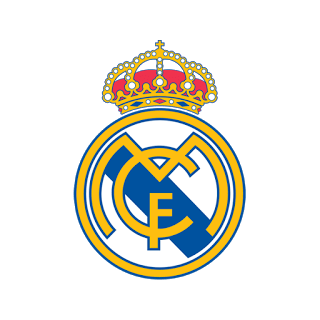

Menu
Over mijzelf
Ik ben Timo en ik ben 15 jaar oud en ik ben een echte Real Madrid fanaat!

Top 4 Favoriete Sporters
| Rugnummer | Naam | Sport | Foto |
|---|---|---|---|
| 7 | Cristiano Ronaldo dos Santos Aveiro | Voetbal |  |
| 10 | Wesley Benjamin Sneijder | Voetbal |  |
| 4 | Sergio Ramos García | Voetbal |  |
| 23 | Francisco Román Alarcón Suárez (Isco) | Voetbal |  |